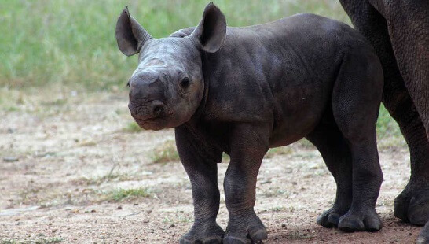

Los rinocerótidos, conocidos con el nombre de rinocerontes, son una familia de mamíferos placentarios del suborden ceratomorfos perteneciente al orden de los perisodáctilos.
Actualmente existen cinco especies: el rinoceronte blanco y rinoceronte negro en África; y el rinoceronte de Java, rinoceronte de la India y rinoceronte de Sumatra en Asia. Según la clasificación de estado de conservación confeccionada por la Unión Internacional para la Conservación de la Naturaleza, las especies de rinocerontes de Java, Sumatra y negro se encuentran en "peligro crítico" el de la India está en "peligro", y el blanco se considera "vulnerable".
En español, además del término rinoceronte, existe la palabra abada1 para denominar a estos animales. Proveniente del portugués abada, que se usa para designar a la hembra del rinoceronte, actualmente su uso es limitado.
La palabra "rinoceronte" (ρινόκερος) proviene de los términos griegos rhino (nariz) y kera (cuerno), y significa literalmente "nariz cornuda" y alude a los característicos cuernos en el hocico, que son además un valorado trofeo y la razón principal de su caza. A diferencia de los cuernos de otras especies, como los antílopes, los de los rinocerontes no tienen un núcleo óseo, sino que están hechos de queratina, la misma sustancia que forma los pelos y las uñas en el resto de mamíferos. Las dos especies africanas y el rinoceronte de Sumatra tienen dos cuernos, mientras que el Indio y el de Java tienen solo uno.
La familia de los rinocerontes se caracteriza por su gran tamaño, siendo de las pocas especies consideradas como megafauna existentes hoy día, junto con elefantes e hipopótamos; todas las especies pueden sobrepasar como mínimo la tonelada de peso.
| Especie | Tamaño |
|---|---|
| Rinoceronte blanco | 190 cm altura |
| Rinoceronte negro | 150 cm altura |
| Rinoceronte de Java | 120 cm altura |
El rinoceronte blanco o rinoceronte de mandíbula cuadrada (Ceratotherium simum) es, tras el elefante, el mayor de los animales terrestres aún existentes en el mundo, junto con el rinoceronte indio, que es comparable en tamaño, y algunos ejemplares macho de algunas especies de hipopótamo. Existen dos subespecies del mismo; en el 2005, Sudáfrica era el mayor hábitat natural de la primera de ellas, el rinoceronte blanco del sur (Ceratotherium simum simum), con una población de 20150 ejemplares, lo que convierte al rinoceronte blanco en la especie de rinoceronte más abundante del mundo.
Aunque el nombre de las dos especies africanas se eligió para distinguirlas, en realidad resulta muy confuso, ya que ambas presentan prácticamente el mismo color de piel, igual al del resto de especies de rinoceronte existentes en la actualidad. Existen cuatro subespecies de rinoceronte negro. La más numerosa es el rinoceronte negro del Centro-Sur (Diceros bicornis minor), que en tiempos se extendía desde el centro de Tanzania hacia el sur, a través de Zambia, Zimbabue y Mozambique, hasta el norte y el este de Sudáfrica. El rinoceronte negro del Suroeste (Diceros bicornis bicornis) está mejor adaptado a las sabanas desérticas y semidesérticas de Namibia, el sur de Angola y el oeste de Botsuana y Suráfrica. El rinoceronte negro del este (Diceros bicornis michaeli) habita principalmente en Tanzania, y el rinoceronte negro del oeste (Diceros bicornis longipes) fue declarado extinto en 2011.4
Cuatro de los muy escasos rinocerontes blancos del norte de África fueron llevados a su hogar de origen en Kenia en 2009 desde la República Checa.
En mayo de 2017, diez rinocerontes negros se convirtieron en los primeros en llegar a Ruanda en los últimos diez años, después de su traslado desde Sudáfrica a la capital del país, Kigali. Diez años después de la desaparición de la subespecie de rinoceronte negro oriental (Diceros bicornis michaeli) en este país africano, un proyecto de recuperación con apoyo internacional está a punto de completar la liberación de una veintena de ejemplares en el Parque Nacional Akagera, en la zona este de Ruanda.